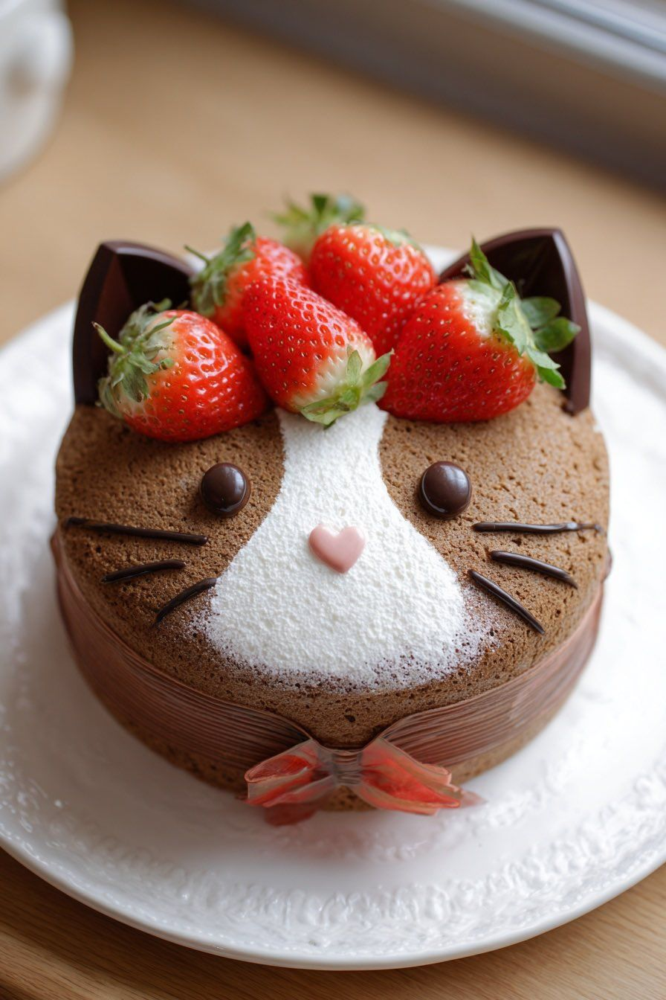
Lua de Baunilha Encantada
Dizem que este bolo é preparado com a primeira luz da lua cheia. Sua massa macia de baunilha guarda um recheio cremoso tão suave quanto as nuvens que acompanham os gatos em seus sonhos noturnos.
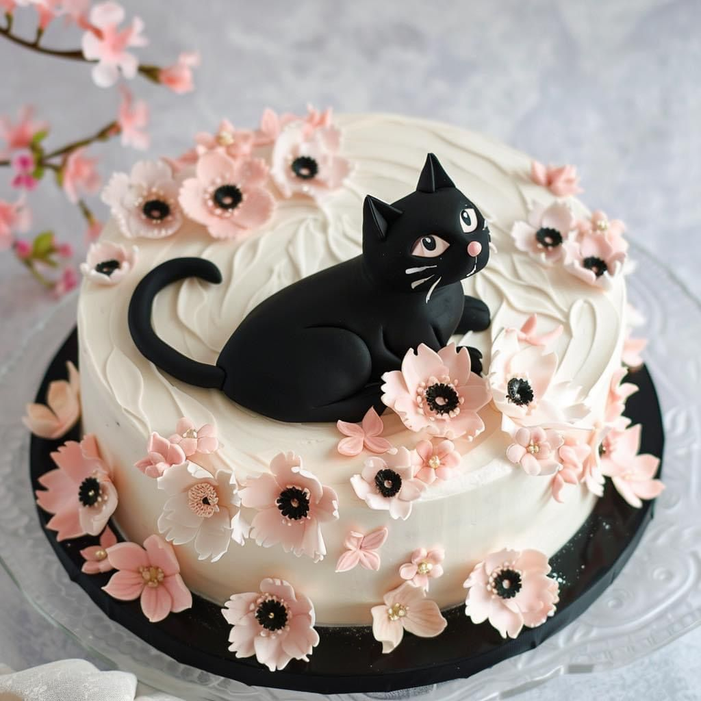
Floresta dos Ronrons
Coberto por frutas vermelhas brilhantes, este bolo nasceu em uma floresta mágica onde os gatos guardiões descansam entre flores perfumadas e árvores repletas de doces encantados.
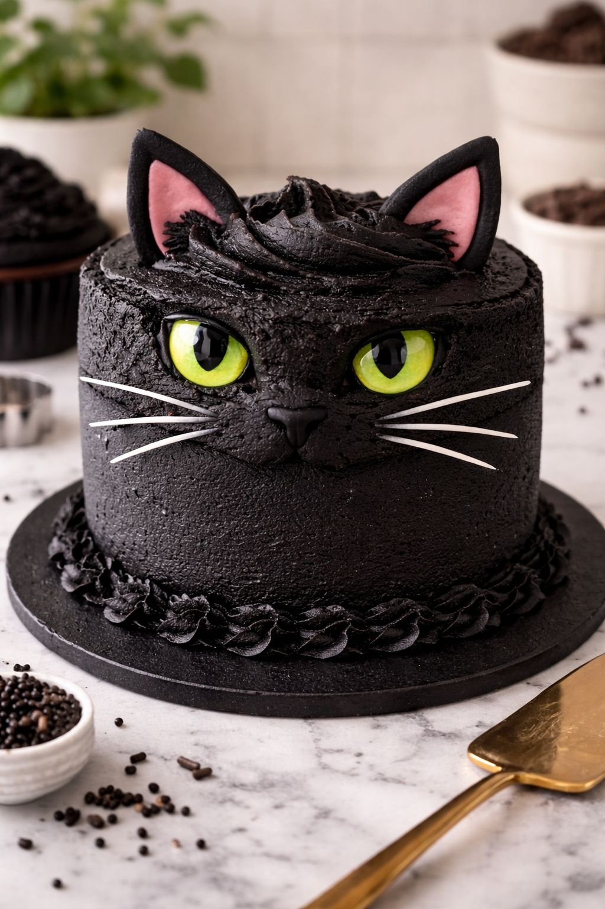
Estrela Felina
Feito com chocolate cintilante e pequenas estrelas de açúcar, este bolo parece ter sido trazido diretamente do céu por um gatinho viajante que coleciona constelações.
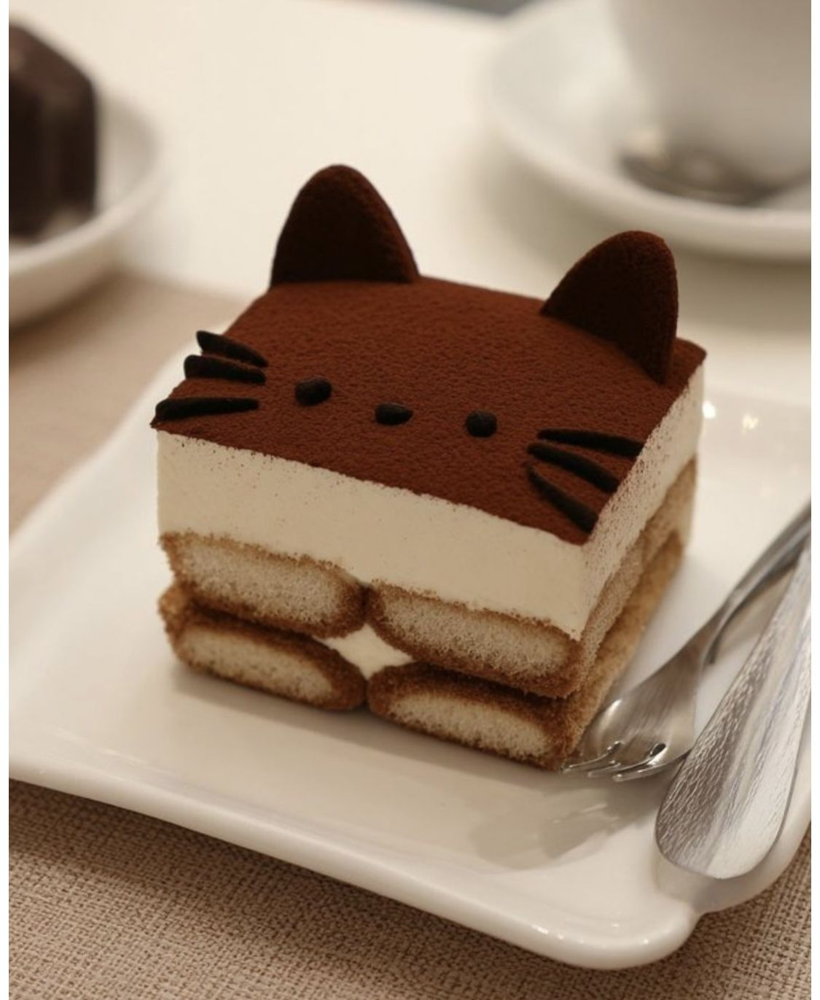
Caramelo do Sol Poente
Com camadas douradas de caramelo artesanal, cada fatia relembra o brilho quente do pôr do sol observado por gatos preguiçosos em telhados encantados.
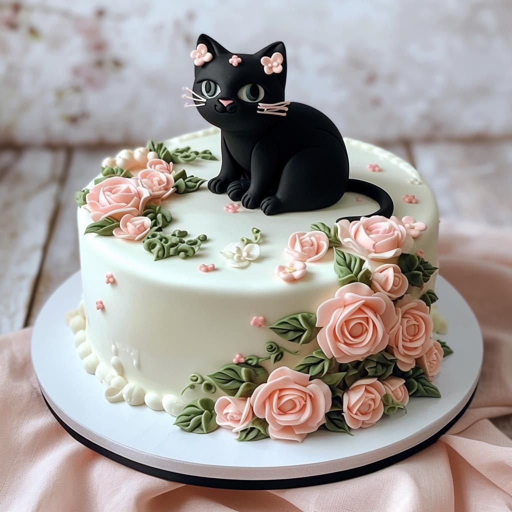
Jardim Lilás dos Gatos
Um delicado bolo inspirado nos campos floridos onde gatinhos mágicos brincam entre lavandas perfumadas e pétalas carregadas de pequenas gotas de orvalho doce.
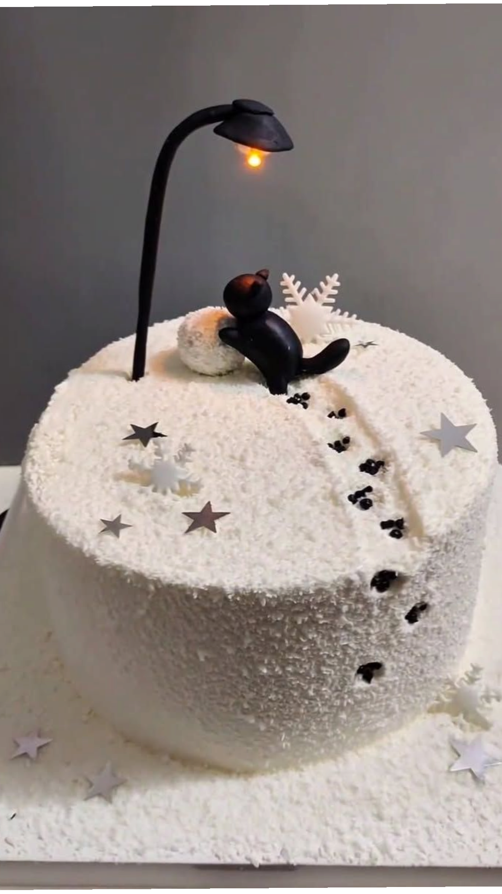
Neve Açucarada
Branco como a pelagem de um gato das montanhas, este bolo possui um recheio cremoso de leite e baunilha que derrete na boca como flocos de neve encantados.
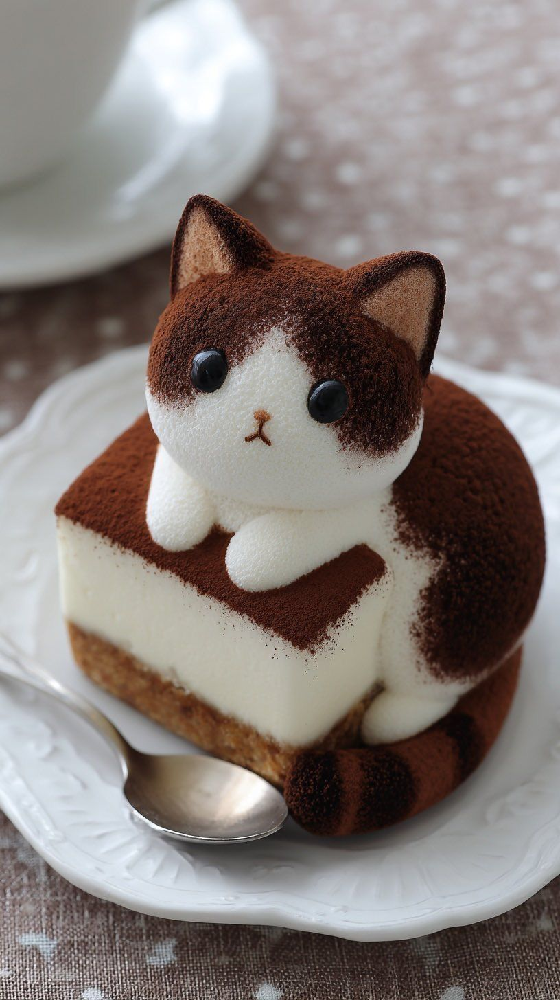
Bosque Esmeralda
Preparado com pistache e creme suave, este bolo representa os antigos bosques onde felinos mágicos protegem cristais verdes escondidos entre raízes centenárias.
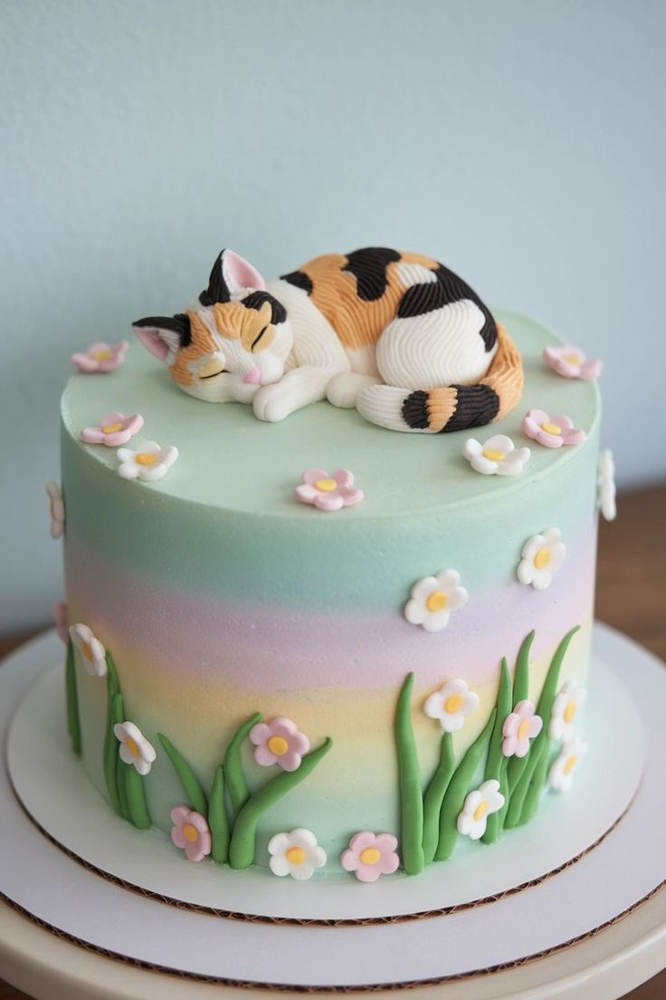
Arco-Íris Felino
Colorido e alegre, cada camada possui um sabor diferente. Reza a lenda que ele surgiu quando um grupo de gatinhos correu sobre um arco-íris e deixou rastros de doçura pelo céu.
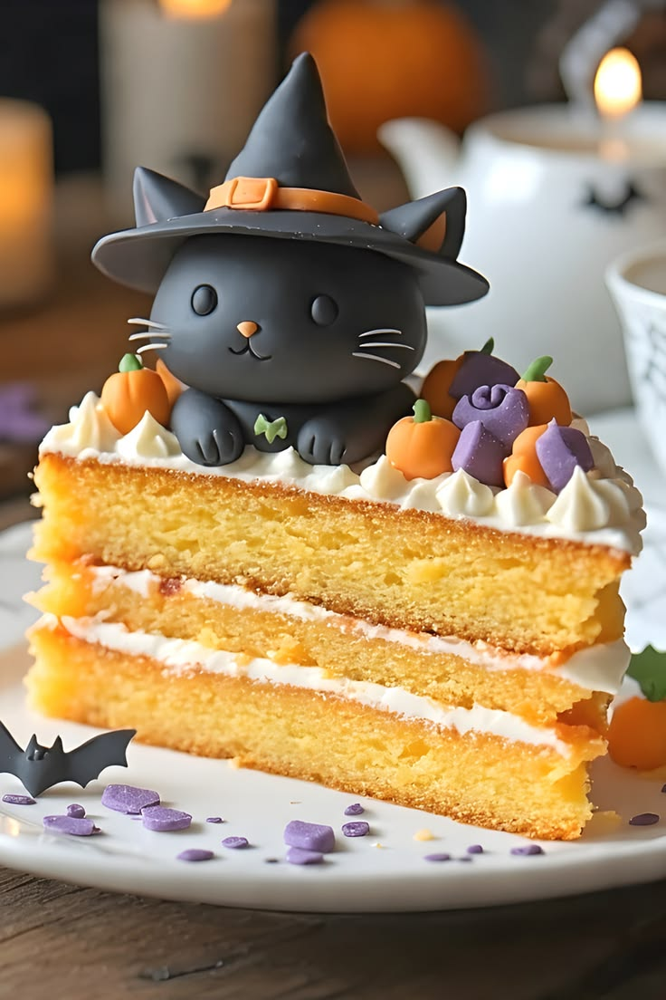
Feitiço do Gato Bruxo
Em uma noite iluminada pela lua, um pequeno gato bruxo misturou creme de baunilha, pedaços de abóbora dourada e uma pitada de magia felina em seu caldeirão encantado. O resultado foi este bolo macio e delicado, decorado com mini abóboras e doces misteriosos, capaz de arrancar sorrisos até dos gatos mais rabugentos. Diz a lenda que cada fatia traz um pouco de sorte para quem a compartilha.
Embalagens por Encomenda
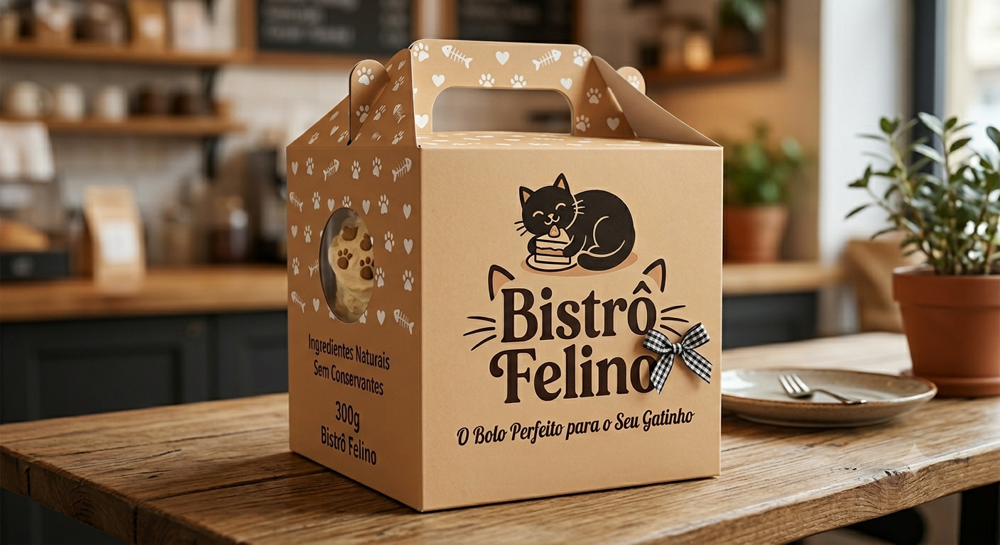
Caixinha Individual
Perfeita para presentear com carinho. Comporta 1 bolo e vem com laço e tag personalizada.
R$ 4,90
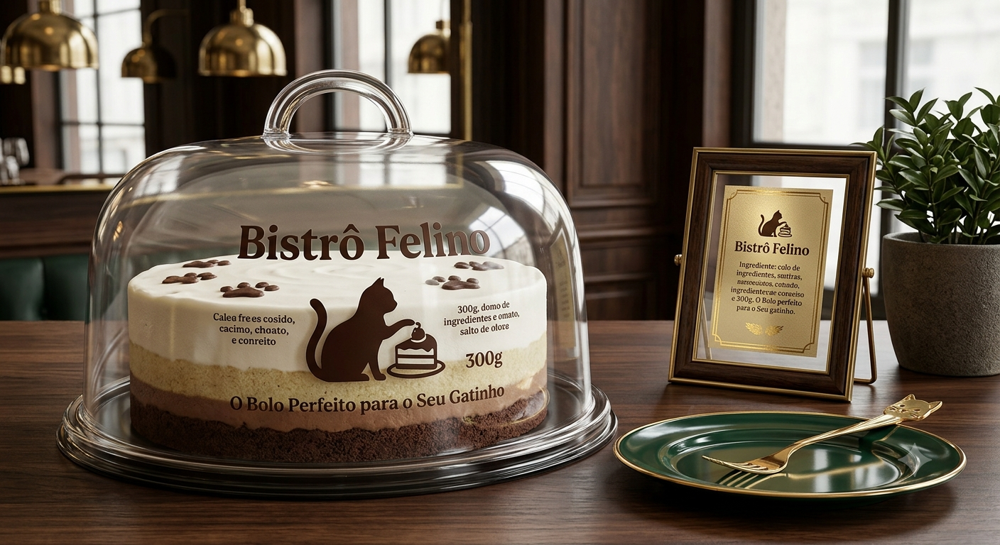
Compartimento Felina
Ideal para compartilhar em eventos. Estampa exclusiva de gatinhos com visor transparente para exibir os Boloscats.
R$ 5,90
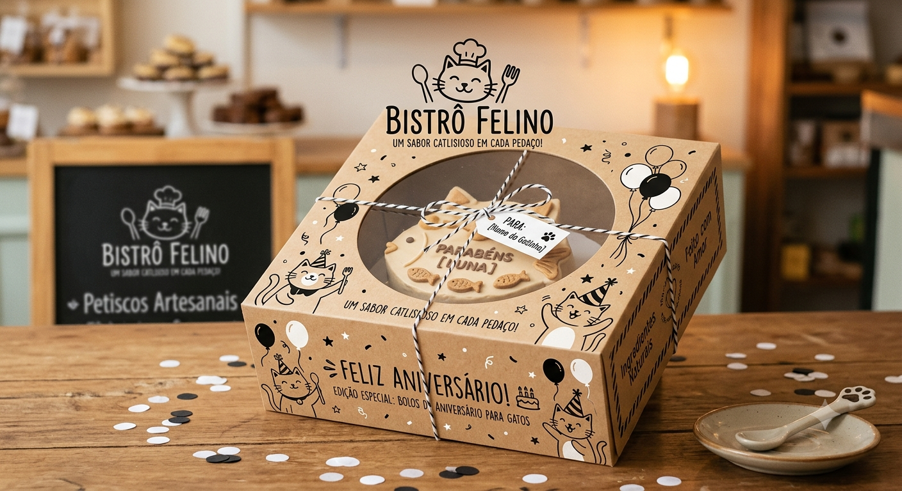
Caixa Festa
Para grandes momentos felinos. Caixa especial com divisórias, fita e cartão personalizado.
R$ 9,90
Os Favoritos dos Clientes 🐾
Jardim Lilás dos gatos
⭐⭐⭐⭐⭐ "O bolo mais lindo que já provei!"
⭐⭐⭐⭐⭐ "Parece ter saído de um conto de fadas."
Bosque Esmeralda
⭐⭐⭐⭐⭐ "Macio e delicioso do começo ao fim."
⭐⭐⭐⭐⭐ "Meu filho pediu novamente no dia seguinte."
Arco-Íris Felino
⭐⭐⭐⭐⭐ "Colorido, divertido e muito saboroso."
⭐⭐⭐⭐⭐ "Virou a atração principal da festa."